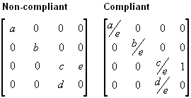

Microsoft® Direct3D® can use the W component of a vertex that has been transformed by the world, view, and projection matrices to perform depth-based calculations in depth-buffer or fog effects. Computations such as these require that your projection matrix normalize W to be equivalent to world-space Z. In short, if your projection matrix includes a (3,4) coefficient that is not 1, you must scale all the coefficients by the inverse of the (3,4) coefficient to make a proper matrix. If you don't provide a compliant matrix, fog effects and depth buffering are not applied correctly. The projection matrix recommended in What Is the Projection Transformation? is compliant with w-based calculations.
The following illustration shows a non-compliant projection matrix, and the same matrix scaled so that eye-relative fog will be enabled.

In the preceding matrices, all variables are assumed to be nonzero.
Note Direct3D uses the currently set projection matrix in its w-based depth calculations. As a result, applications must set a compliant projection matrix to receive the desired w-based features, even if they do not use the Direct3D transformation pipeline.